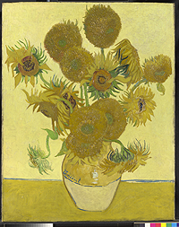

CODE DRIFT
Fractal Philosophy (and the small matter of learning how to listen)
Attunement as the Task of Art
Johnny Golding
 | |
| Self-Portrait Dedicated to Paul Gauguin 1888; Oil on canvas, 60.5 x 49.4 cm (23 3/4 x 19 1/2 in); Fogg Art Museum, Harvard University, Cambridge, MA | Self-Portrait with Bandaged Ear, Arles: Jan 1889; Oil on Canvas, 60.0 x 49.0 cm; The Courtauld Institute Galleries |
'What terror haunts Van Gogh's head, caught in a becoming-sunflower?'[1]
|  |
| Self-Portrait? The Sunflowers (detail), 1888; replica (also by Van Gogh), Jan 1889, oil on canvas 2.1x 73 cm, National Portrait Gallery |
B-side Philosophy (The Transformation of Van Gogh's Right Ear)
Deleuze and Guattari offer three playful but coded journeys onto the broad arena they call 'the task of art' -- where task, not to mention art, is meant to spill into, reconfigure and/or destroy the varying pragmatic-spatio-temporal intensities one might otherwise call 'life'. These three journeys can be listed thus: that of an immanent 'becoming-x'; that of the ever-sporing 'rhizome'; and that of the a-radical, surface-structured, non-rooted 'refrain'.
Par-boiled into a manifesto-style primer, the first of these journeys is shaded and toned by the concept-process-phrasings of a 'becoming', be that as a 'becoming-intense', a 'becoming-animal', a 'becoming-woman', a 'becoming-sunflower', a 'becoming-imperceptible' or a becoming-n+1-combination-of-that-which-lies-to-hand-or-may-be-or-already-has-been-becoming. [2] It all might seem a bit 'method acting' or indeed 'running towards' without ever really 'getting there'. Nevertheless, D&G proclaim:
We are not in the world; we become with the world; we become by contemplating it. Everything is vision, becoming. We become universes. Becoming animal, plant, molecular, becoming zero. This is true of all the arts. [...] Art does not have opinions. Art undoes the triple organisation of perceptions, affections, and opinions in order to substitute a monument composed of percepts, affects, and blocs of sensations that takes the place of language. It is about listening [...] This is precisely the task of all art. [3]
These 'becoming-' journey-bandwidths mark the first stage of art's work. But it is a 'first' not in a hierarchical, privileging sense, but rather in a logical sense; that is, by taking as a given that one 'begins' precisely where one 'is' -- a pragmatic 'start' that can only ever happen by accounting for the constitutive reality of the present-tense 'is'; that is to say, of the 'here and now'. [4] This is a very different accounting of the 'constitutive realities of the present-tense "is"' offered either by Hegel on the one hand or by Heidegger on the other. A brief potted-review of both on the question of what is 'the is' will serve to clarify what is at stake for Deleuze and Guattari -- what they steal and what they leave behind from both treasure troves -- and why.
Perhaps the clearest exposition of the constitutive 'is' for Hegelian logic can be found in the Phenomenology of Spirit where, for our purposes, three crucial distinctions are established: first, in terms of what is a 'Universal Concept' (as distinct from any other kind of concept); second, in terms of what is the 'This'; and third, in terms of what is 'Negation'. [5] At its most simple point, the Universal Concept names the full or totalised expression of any object -- no matter where or when -- without leaving anything to chance, opinion, perception or whim. To do otherwise is to fall prey to the usual fault of confusing an 'abstraction' (or 'model') with a Concept. [6] The only way in which one can be absolutely certain that the entirety of the picture has indeed been drawn -- that nothing has been left out or can be added at will -- is thus to follow the dialectical formulation that Universality will always-already consist of (a) an abstract version of 'all that there is (thesis),' plus (b) the point-for-point (but still abstract version) of 'all that there is not (antithesis),' whose (c) sublation of the one into the other (thesis into antithesis or vice versa) produces a synthesis, which (d) comes 'back around' to form the 'concrete-ground' (essence, basis) of the Absolute / Pure (Universality) of the Concept, itself now also 'grounding' (i.e., giving meaning to) the aforementioned and previously abstract thesis/antithesis. [7] In short, this dialectically encased resolution of the thesis/antithesis from pure abstraction into its highest, fully synthesized, 'concrete' and purest form of Spirit-Knowledge -- with no extraneous bits hanging outside of the 'whole picture' (Totality) -- 'comes back around' to form the basis/ground of all meaning, truth, interpretation and reason. It is a tidy, self- satisfying, teleological move. As Hegel summarises:
20. The True is the whole. But the whole is nothing other than the essence consummating itself through its development. Of the Absolute, it must be said that it is essentially a result, that only in the end is it what it truly is; and that precisely in this consists its nature, viz. To be actual, subject, the spontaneous becoming of itself [8].
The niggling problem to which Hegel was of course fully aware, was that Reality managed always to be greater than the sum of its parts; indeed, if this were not the case then by simple arithmetic, thesis + its point-for-point contradictory antithesis would always equal 'zero' or at best would simply establish a tautology (A ? not-A). One could say, ? names the synthesis ? : ? for no other reason than that I say it is so, a position that might be fine with Humpty Dumpty, but was far more problematic for Hegel. [9] And yet it was not possible to 'add' anything extra to the logic of the Concept in order to make it 'make' (as in produce, express, disclose) 'sense' (meaning, sensuousness, life). This is because at its most profound point, Idealism -- and certainly Hegel's version of it -- was attempting to press the argument that no 'outside' set of logics or omnipotent points of observation should be required to explain any given phenomena. The logic had to hold, in and of itself; and more than that, it had to do so by simultaneously encompassing 'change', 'movement' and 'progress' as integral to any concept, and therewith, as integral (i.e. 'within') the Totality. [10]
The question, then, of how systematically to add a 'something' to the immanent movement without raising the entire edifice of Totality to an unworthy, arbitrary ground or, worse, to reducing it to mere tautology or opinion, perception or whim, was resolved in part by Hegel's neat reformulation of the 'This'. It was a curious kind of architectural move; one that not only led to one of Hegel's greatest achievements -- that of 'Negation' and with it, the notion of (a teleological unfolding of) the Universal 'becoming-a-something' -- be it through self-certainty, perception, consciousness, identity politics, mastery, bondage and etc. -- but it ironically heralded his ultimate failure -- at least from the vantage point of the politically committed scholar, artist, person-in-the-street, not the least of whom included Deleuze and Guattari, despite their obviously sticky fingers when it came to pinching a concept.
Hegel played his cards by problematising the whereabouts of the 'This', as well as the 'Here' and 'Now' which, taken together constituted the dialectically informed manifestation of 'This'. He problematised their whereabouts in the following way: At the very moment one might point to or attempt to grasp (both intellectually and practically) the present-tense Real in all its glorious manifestations -- this 'Now' will always-already disappear into a Before or an After or a Somewhere Else. This is because the present -- as present, i.e. as a 'not-mediated' entity, can never itself become embodied or 'fully realised', precisely because ipso facto it is 'im-mediate'. Or, to put this slightly differently, it is to say that this 'impossible' non-representational moment of the 'This', is both the expression and presencing of an abstract 'otherness' whilst, simultaneously, also expressing/ presencing a radical fluidity of movement. A rhetorically demanding Hegel explains it thus:
95. [...] What is the This? If we take the 'This' in the twofold shape of its being, as 'Now' and as 'Here', the dialectic it has in it will receive a form as intelligible as the 'This' itself is. To the question: 'What is Now?' let us answer, e.g. 'Now is Night.' In order to test the truth of this sense-certainty, a simple experiment will suffice. We write down this truth; a truth cannot lose anything by being written down, any more than it can lose anything through our preserving it. If now, this noon, we look again at the written truth we shall have to say that it has become stale.
106. The Now that is pointed to, this Now: 'Now'; it has already ceased to be in the act of pointing to it. The Now that is, is another Now than the one pointed to, and we see that the Now is just this: to be no more, just when it is.The Now, as it is pointed out to us, is Now that has been, and this is its truth; it has not the truth of being. Yet this much is true, that it has been. But what essentially has been [gewesen ist] is, in fact, not an essence that is [kein Wesen]; [rather] it is a 'not'. [...] [11]
Or, to put it yet another way: the 'This', the 'Here', the 'Now' -- in short, the 'is' of Hegelian Idealism -- is nothing other than the abstract surface structure of any given Universality. And as with any surface (say, for example, the surface of a table) not only can the 'surface-is' not exist without the actuality of the structure to which it is attached acting as 'ground' to the said surface, but that the surface acts also as the 'expression' of the point-for-point structure to which it is attached. In the case of the 'This', the 'Here', the 'Now', etc, each is 'surface' to the Totality, attached to and expressing in this case, the dialectical fluid structure of movement itself. And as that surface can never be larger nor smaller than the structure to which it is attached, nor for that matter, remain 'inside' or 'outside' any Totality, this 'surface' neither embodies weight nor substance nor essence nor space. Nevertheless, as a surface expressing a (transcendental/immanent) movement-structure, it still names an eternally unfolding 'otherness-' without which meaning cannot be sutured or made 'manifest', i.e. made present. Removed from its ground (synthesis), i.e., taking the 'surface' to be 'in and of itself', the 'This' of the 'Here' and 'Now' simply cannot be 'grasped'. But as we will see momentarily, it is precisely the surface-immanent movement-structure called 'This' that D&G wish to liberate from the shackles of a Universalised Totality. As we will see, this immanent-movement-structure will morph into many things: sometimes the 'refrain'; sometimes a 'viral assemblage'; sometimes 'logic of sense'; sometimes 'simulacrum'. (We might even wish to call it 'Van Gogh's right ear', but I am getting ahead of the argument). [12]
To the question, then, what can be added in order to avoid tautology, whim, outside direction or authorial opinion, Hegel's answer is quite clear; he names it the Negative -- the immanent teleological 'surface' unfolding of dialectical synthesis itself. [13] This may seem surprising, but this move to situate the 'is' as a Negative surface structure was quite an advance from the original zero-sum position of thesis + anti-thesis = the whole of the Universe. For not only did establishing 'the Negative' as an immanent and 'unnameable-something-other' allow for the breaking up and adding to an otherwise deadlocked and tautological A ? not-A identity formation. It also meant that the so-called deep cut ('/') between thesis/antithesis could now no longer be envisioned as a logical no-man's land, i.e., as the 'excluded middle', often wrongly subsumed by political/creative identity inventors to be the 'in between space' of Otherness, and therewith of liberation, itself. If one were to stay within the confines of Universality, there could never be an 'in between' moment bracketing the past and the future, just an abstract, negative surface structure of 'a plurality' of Nows, which vanish at the very moment of their debut, though not without holding the door open so that 'meaning' can take (its) place.
108. [What gives the Here its gravitas?]. The Here pointed out, to which I hold fast, is similarly a This. Here which, in fact, is not this Here, but a Before and Behind, an Above and Below, a Right and a Left. The Above is itself similarly this manifold otherness of above, below, etc. The Here, which was supposed to have been pointed out, vanishes in other Heres, but these likewise vanish. What is pointed out, held fast, and abides is a negative This, which is negative only when the Heres are taken as they should be, but in being so taken they dispersed themselves; what abides is a simple complex of many Heres. The Here that is meant would be the point; but is not; on the contrary, when it is pointed out as something that is, the pointing-out shows itself to be not an immediate knowing [of the point], but a movement from the Here that is meant through many Heres into the universal Here which is a simple plurality of Heres, just as the day is a simply plurality of Nows. [14]
Of course Deleuze, as well as Guattari, reject -- and for good reason -- the Hegelian dialectic, often demanding to rid philosophy, politics, science and art of, as Foucault so eloquently put it, "the old categories of the Negative (law, limit, castration, lack, lacuna), which Western thought has so long held sacred as a form of power and an access to reality." [15] But it was also no less the case that the Hegelian dialectic, and particularly the way in which the Concept itself had been formulated was, and remains to this day, a tough act to beat. For to rid Philosophy of the metaphysical 'is' seemed to imply a good riddance to some of its more eloquent fares -- plurality, surface-synthesis, movement, the instant -- not to mention 'pure immanence' and with it, the possibility of destroying the otherwise inventive categories of, say, 'becoming-woman' or 'becoming-animal' or 'becoming-sunflower' or 'becoming- ear' and etc. It often seemed (and in some quarters, still does), that the price of fighting to create a wholly different set of anti-oedipal identities and, with it, a wholly new set of social order(s) might just be worth the price of enduring, just for a moment or two, all the rotting bad smells of the Hegelian identi-kit corpse. [16]
And yet, this is precisely what D&G set out to accomplish: a way to hold one's nose against Hegel and all forms of Metaphysical thought in order to conceptualise, materialise and endure the very act of 'becoming-x' without being penetrated by 'arboreal philosophy', even if 'just for a moment or two'. The dangers to allow otherwise, were too grave. For arboreal philosophy was their euphemistic way to identify the, by now well-entrenched planters-wart logic of continuity, goals, processes and closed systems, thoroughly embedded in all flat-footed State philosophies and common sense pronouncements -- of which 2000+ years of Metaphysics, contemporary Warfare, instrumental Science, Literature, Art and Religion had done little to uproot.
At its most simple form, arboreal philosophy could be understood in this manner: Take as a given a seed, say for example, an acorn. Now, no matter what one does (assuming it is gardened properly and not set alight or mashed), it will only ever unfold / manifest itself as an Oak Tree. The Tree is thus the 'goal' to which all little acorn seeds aspire. This 'aspiration', as it were, is continuous, linear (even if the path appears convoluted, spiralled, hysterical, nasty or relaxed). This is because all change, no matter how often or in what manner it occurs, does so in relation to an always-already 'unfolding' trajectory of that growth. The Oak, as the 'outcome' of the acorn, names thus the very purpose (ground) of the said seed. It is only the elemental processes to which that seed might be subjected (say, wind, sun, rain, unemployment, bullying etc) that determines 'how' the Oak might turn out (big, small, gnarly, demented, covered in law suits). Thus is revealed the 'true purpose' of one's Being; or, as eugenics might proclaim, 'it's all already coded in one's basic DNA'. [17]
Most crucially, then, and no matter what the seed might do, be it wishing, hoping, praying (or even becoming a political militant), it would only-ever keep unfolding towards its proverbial goal (The Old Oak Tree). The Oak Tree-goal thus gives meaning, purpose, destiny to our little seed, who in times of drought or strife or just hanging out with Feminists, might otherwise be tempted to fall off the so-called True path (though, in the cold light of day would 'come to its senses' and realise, one way or another, that this kind of dreaming could/should/would never do, as it was considered impossible to fall outside an always-already given 'nature'). To be sure, then, under this logic, one could never leave the family; one could never attempt the dream of becoming-x, if that 'becoming-x' was something other than the already proscribed path. One could never morph into, say, a butterfly or Mazeratti car, no matter how dedicated to becoming 'butterfly' or 'car' that seed might wish to be. This might be very well and good if one happens to be an acorn; but if one happens to be a slave, woman, racial-Other, gay, transgender and etc; if one happens to 'think outside the box' or grow 'bigger than one's britches' or try to 'rise above one's station' etc, it becomes clear where this grounded and continuously unfolding logic can go wrong. Mob lynching, stoning, raping, murder, ethnic cleansing, Sharia law, torture all gain an ethical toe-hold in the culture as 'rightful' punishments against those attempting to become a-something-other-than-what-they-were-always-meant-to-be. "We're tired of trees," sigh D&G. "We should stop believing in trees, roots, and radicles. They've made us suffer too much. All of arborescent culture is founded on them, from biology to linguistics." [18]
But the question remained: whether one could account, both epistemologically and analytically for the 'constitutive is' as a something that 'made sense' -- in the fullest use of the terms 'to make' (create, enable, force) and 'sense' (sensuousness, intelligence, the senses), without reintroducing the tetra-headed trap of Universal Totality, the Negative, and the teleological methods of Dialectic unfolding. If this could be done, argued D&G, then the political and aesthetic yields would be substantial. Because, then, for the first time in a rather long time, not only would philosophy have caught up with the very reality it had been seeking to inhabit: i.e., one steeped in discontinuous logics, fractal codes, non-representational art, multiversal genders, non-national sovereignties. It would mean bearing witness to our contemporary age in an active, participant manner, rather than as mere drones, couch potatoes or passer-bys. Accounting both epistemologically and analytically for the 'constitutive is' in terms of this 'age' called 'technology' meant taking seriously the combinatory logics of 'techne' itself. It meant taking seriously that in our epoch/ age, a different way of systematising was virulently underway: one that foregrounded 'the art of grasping the "out-there"'; one that worked off of and around patterns and poeisis, simulacrum, circulation, assemblage and exchange. An epoch whereby wholly different end-games-as-mid-games become networked orders of the day, producing, expressing and demanding, quite different politics, ethics, science and art -- not to mention timings and spatialities -- than those encountered by our Ancient, Modernist (and postmodernist) cousins, barely visible with a Metaphysical lens.
Not to be daunted, it seemed the only way -- or at least the main experimental way -- to eliminate Hegelian substance, and with it, arboreal philosophy, was at first to commit to, what would later be called, the 'outside of thought.' [19] Here 'outside of thought' meant something quite different than a kind of anti-intellectual run toward 'Practice' (the usual partner-in-crime rallied against 'Theory'). Getting away from, or getting 'outside' of, thought was meant to get distance from metaphysical Contemplation rather than getting away from being conceptual. It meant trying to get away from the conflation of language with 'metaphor', 'semiotics', 'signifier,' and therewith, representation. [20] In short, it meant trying to figure out how to 'picture' -- without the visuals -- the becoming-sunflower of Van Gogh's right ear.
A-side the B-side: Learning how to listen (Attunement as the task of art)
But to give the 'outside of thought' a kind of coherence so that it, too, would not be in debt to the arboreal authority-voice of its makers, required yet another subtle move. Speaking as they often did with 'a single tongue', Deleuze and Guattari thus dined out in several parallel universes at the same time. Pocketing ingredients from around the philosophical galaxy -- from the worlds of expressionism (Spinoza), pure immanence, artifice and a-radical geneaologies (Hume, Nietzsche), folds and monadology (Leibniz); lan vital, simultaneity and duration (Bergson); pattern, difference, repetition and time (Heidegger), sense and sensation (the Stoics, Lewis Carroll, Bacon) and the cartographically discursive, diagrammatically challenged regimes of power, ethics, aesthetics and existence (Foucault) -- they began to build their counter- trans-immanent-logic. Long spoons were at the ready. For dangers lurked at every turn at this oddly Bacchanalian banquet: mix-matching such a heady crowd whose epistemological, not to mention political, allegiances were often suspect, or at best 'complicated'. [21] The seating arrangements themselves must have given grave cause for alarm.
And yet, despite being such a wildly provocative intra-species guest-list, they did seem to have at least one thing in common (however differently each, in their own distinctive way, might have approached it). What they had in common was an analytic accounting for cultural reinvention beyond the usual binaries of good and evil; or to put this slightly differently, what they had, or tried to have, was a way to account for the truth of culture as that which must emerge from ungrounded 'difference', a 'difference' that was something to be grasped, invented -- that is to say, inhabited -- in all its inglorious manifestations, productions, changes without recourse to a totalising picture of reality. The Other, impossible, uninhabitable, excluded middle, of the 'is' -- dialectically formed or otherwise -- was dead. And in its place, another kind of 'is', one that not only could acknowledge and express difference, but was the source of it. Foucault would name it as a 'stylistics' or 'art of existence', the multiple practice of gathering many selves -- slices of selves, pleasures of selves -- to the self. Nothing discovered, nothing revealed, just a sensitive/sensuous kind of whoring, a discursive whoring, along the lines 'share all reveal nothing'. [22]
'"[I]f I was interested in Antiquity," Foucault remarked two months before his death, "it was because, for a whole scenario of reasons, the idea of a morality as obedience to a code of rules is now disappearing, has already disappeared. And to this absence of morality corresponds, must correspond, the search for an art of existence." [23]
The becoming-gay, the becoming-butterfly, the becoming-the-colour-purple, would instead be constituted by the very journey to which that 'becoming' had embarked. It would be re-envisioned by D&G as a 'surface' journey, a pollinating, ruminating, sporing, folding and re-folding kind of journey, a journey of joining a 'this' with a 'that' for no other reason than that it could be (and in many cases, had to be) done; where nothing is 'True' (in the sense of being Universal, Totalised, Rooted); where the Ground, that lies before us as 'ground' is nothing but the discursive structure of those sporing/pollinating movements, quite divorced from a given 'picture', 'representation', 'semiotic' or 'goal'. Where the political, ethical and aesthetic task, should one rise to it, would be to undertake this stylistics of existence, a mingling with free-fall experimentation and groundless-Grounds in order to make the assemblage of a becoming-x 'real', coherent, sticky.
"The question," a wise Foucault thus tabled, "...is not: if there is no God, everything is permitted. Its formula is rather the question: if I must confront myself with 'nothing is true', how am I to live?" [24]
This, and not an 'im-mediate' Now-time is the 'where', the so-called 'de-territorialised plane' of one's 'beginning'. Or to say it with more force: the 'This' of the Foucauldian question 'if I must confront myself with 'nothing new', how am I to live?' is precisely the 'plane' upon which these disconnected (or not continuously connected) inventive journeys are mapped, a kind of web or discursive cloud-networked cartography, neither virtual nor grounded, but tangible nevertheless. Entailing no end-points or goal or ground, Deleuze and Guattari would later refine this 'this' as precisely 'the plane of immanence', the critical dwelling 'plateau' upon which invention could and always did take place, however fleeting and oddly-dimensional this constitutive 'spatiality' might be or become, without recourse to a proscribed Truth, Ethics, Spirit, Destiny. [25] As we know from their work, there are at least 'a thousand' of these plateaus.
This diagrammatic mapping 'plane of immanence' not only ventured beyond the good and evil limits of a constituted 'truth', now itself folded and in/formed by the seemingly endless vagrancies of free-fall experimentation and art. But it was a cartography that ventured beyond the concrete walls of the Universal Concept itself.
For the concepts Deleuze and Guattari started to invoke were curiously beginning to take on the atmosphere of not quite being concepts at all, at least not in the sense that Hegel would have meant. But neither were they non-concepts i.e., descriptions or markers which might tend to hark back to some kind of pre-existing rule, resemblance, metaphor or code, or not hark back to anything all, preferring to remain at some arbitrary level of a shopping-mall mentality. Instead it could be said that they ushered in, along with some of their guests, a serious break with the Universal and the Teleological, and flitted, instead, towards the 'multiversal' and the 'morphological' or 'teleonomic', surface structure cohesions, clusters or assemblages with no 'other-side', no antithesis or thesis, no abstraction, concretion or synthesis, but nevertheless could 'jump' or 'spore' to an 'elsewhere' in the same manner that grass and other rhizomatic entities took flight. A non-rooted (a-radical), ana-logical, slice-point 'singularity' -- neither part of a whole (as in fragment, thesis, antithesis, synthesis) nor held hostage to the 'ground' for its bread crumbs of meaning. [26]
The fractal points of resistance, curiosity, anger, boredom and etc -- otherwise called rhizomes -- instead enframed the very journey of their de-territorializing map making with whole series of mutant relativities and viral assemblages. [27] Each sporing move meant to pollinate or gather (or both or something else altogether) the nano-wave particles of life, death, grease, break-down, slice-of-ear into some kind of constitutive, becoming-x environ, a constitutive-now-time-space thus made present, coherent -- A LIFE, to shout out with Deleuze -- in the very event of its appropriation. [28] A non- stratified, "piece of immanence," to paraphrase the D&G of November 28, 1947, to be constructed "flow by flow and segment by segment lines of experimentation, becoming-animal, becoming-molecular, etc." [29]
This appropriation -- led, countered, laughed at -- by the ana-human be-ing of rhizomatic fame, was given many nicknames: planes of consistency, a collectivity of desiring-machines, intensities, deterritorialising 'Body without Organs,' and was based on many kinds of ana-logics which, in the bargain, gave sustenance to an otherwise relentless onslaught of right-wing political, aesthetic, ethical, and epistemological toxicities. A deterritorialisation that helped stave off organisation, stratification, sedimentation, all the sine qua non for fascist massification.
"People ask: So what is this BwO? But you are already on it, scurrying like a vermin, groping like a blind person, or running like a lunatic: desert traveller and nomad of the steppes...Experimentation: not only radiophonic but also biological and political, incurring censorship and repression. Corpus and Socius, politics and experimentation. They will not let you experiment in peace. [...] A BwO is made in such a way that it can be occupied populated only by intensities. Only intensities pass and circulate. Still, the BwO is not a scene, a place or even a support upon which something comes to pass. [...] It is not a space, nor is it in space ...It is nonstratified, unformed, intense matter, the matrix of intensity, intensity = 0; but there is nothing negative about that zero, there are no negative or opposite intensities. Matter equal energy. [...] (It is) the tantric egg."
"The BwO is what remains when you take everything away." [30]
There was only one, very tiny, somewhat off-putting, difficulty with their line of flight from the Negative, especially via the rhizomatically imbued Bodies without Organs: these ana-concepts still seemed closer to metaphor and description than a tool with which to combat the binaries and all associated restrictions. Or to put it somewhat harshly: It didn't seem to work.
It might not have worked because, quite frankly, maybe their "mouth-breast", as they might say, was never meant to work. Maybe it was just a blood-curdling plea to get the hell out of Metaphysics, right here and right now, and like many a giant before them, rather than becoming-like-a-butterfly-and-stinging-like-a-bee, their becoming-x just kept amounting to the eternally returning nightmare of becoming-Descriptive or becoming-Metaphysics. [31] Because despite their arguments, supplications, tantrums, demands, sweet jokes, political commitment, intense rigour, hilarious drawings and sometimes indecipherable, insufferable wanderings, they were still saddled with the initial problem confronting Hegel and, indeed, all of philosophy, all those many years ago: how to present a logic that would accommodate reality (and not the other way around) without resorting to whim, opinion or might over right, especially if that whim, opinion or might over right just happened to be unquestionably 'molar', fascistic, oppressive.
Heidegger's move, with which D&G were quite familiar, was to revisit the problem of the elusive presence by relocating Metaphysics, and with it, representation, (i.e., the standing in for an 'x', by resembling or copying) as, also, and perhaps more importantly, a re-presenting (repeatedly presenting, 'bringing forth' [stellen]) of the relation of being (entity) to Being (Da-Sein). [32] For Heidegger, this 'bringing forth' could be retranslated as 'putting man [sic] in the picture.' But it also would mean to 'understand' or, more colloquially, still, 'to get the picture'. To 'conceive' (understand) and 'get the picture' (grasp), when taken together, underscores the specificity of a time period -- our time period, the 'Modern World' or 'Age of Technology' -- when the ability both to 'hear' and 'do' (i.e. put oneself in the picture) and at the same time, be taken into this picture by one's relation to the 'There' of science and of life, become the binding feature of this epoch. It is, as he notes in "The Question Concerning Technology," an age bound together by the logic of techne -- the ability to 'grasp' the 'out There' and, simultaneously, be grasped by it, where, as he puts it, "the essence of technology is by no means anything technological." [33] This relation, the relation of b ? B, enframes our world, and forms 'our picture' of it -- a picture that is not particularly 'visual', and not at all anthropo-centric. Its method is 'poiesis' and its path is nothing other than the sensuous logics initiated and 'brought forth' through the artistry of the grasp. This is the 'essence' of technology -- having nothing to do with the usual understanding of technology as domination, machinery and computer, but instead, a 'This-world' constituted by the logic of its techne. Heidegger thus writes:
"This prospect strikes us as strange. Indeed, it should do so, should do so as persistently as possible and with so much urgency that we will finally take seriously the simple question of what the name "technology" means. The word stems from the Greek. Technikon means that which belongs to techne. We must observe two things with respect to the meaning of this word. One is that techne is the name not only for the activities and skills of the craftsman, but also for the arts of the mind and the fine arts. Techn belongs to bringing-forth, to poisis; it is something poietic." [34]
Accordingly, the constituted surface-structure 'This', the present-tense 'is', for Heidegger, is a surface-structure relation 'in-formed' by technology, by the logic of its technique/grasp/art. This sets apart our age from any other age, not because the age of technology is 'best' or 'new' or even 'our age' and therefore particularly appealing to us. It is because the age itself is characterised by a particular combination of regimes of knowledge -- an ars scientifica and an ars erotica, as Foucault would say -- which taken together form the 'ground' of our truth. Heidegger would call it a 'gathering together', a becoming-hypokeimenon (subject) by grasping the that-which-lies-before as ground, a 'grasp' that -- if it works (i.e., if it can bring- forth) -- will not only re-make the very meaning of what is 'man' and what is 'the There', but it will make that meaning 'stick' together. [35] Heidegger summarizes:
"'To get the picture' throbs with being acquainted with something, with being equipped and prepared for it. Where the world becomes picture, what is, in its entirety, is juxtaposed as that for which man is prepared and which, correspondingly, he therefore intends to bring before himself and have before himself, and consequently intends in a decisive sense to set in place before himself. Hence world picture, when understood essentially, does not mean a picture of the world but the world conceived and grasped as picture. What is, in its entirety, is now taken in such a way that it first is in being and only is in being to the extent that it is set up by man, who represents and sets forth. [...]
However, everywhere that whatever is, is not interpreted in this way, the world also cannot enter into a picture; there can be no world picture. The fact that whatever is comes into being in and through representedness transforms the age in which this occurs into a new age in contrast with the preceding one. The expressions "world picture of the modern age" and "modern world picture" both mean the same thing and both assume something that never could have been before, namely, a medieval and an ancient world picture. The world picture does not change from an earlier medieval one into a modern one, but rather the fact that the world becomes picture at all is what distinguishes the essence of the modern age. [...]
Wherever this happens, man "gets into the picture" in precedence over whatever is. But in that man puts himself into the picture in this way, he puts himself into the scene, i.e., into the open sphere of that which is generally and publicly represented. Therewith man sets himself up as the setting in which whatever is must henceforth set itself forth, must present itself [sich... prsentieren], i.e., be picture." [36]
The move to 'picture' the logic of techne as the basis of an age that, for a variety of reasons, could grasp/gather 'the that which lies before us as ground' at once tore the 'present' away from the impossible inhabitation of the Hegelian dialectic. Indeed, with the Heideggarian move, the 'present' that the This thus named, was precisely the interlocking tango of identity and difference, and, more than that, it was the poetics of the move which made it flourish, become 'real' and 'make' history. That history was called 'the age of Technology,' and its primary loci was the art of making it so. In this sense, Aesthetics overtook Economics in the grounding of our contemporary modes of production.
However, it still managed to do this by keeping one large boot in the camp of Metaphysics.
Deleuze and Guattari presented a solution to this last problem. It made sense to import Heidegger's logic when it came to the role of techne and the 'gathering' into an inhabitable present, the 'This' of that which lay to hand. The 'picture' worked, made cohesion 'real' and 'sticky', but in its present Metaphysical form, had to be redrawn. To this end, they exchanged the visual for an 'aural' presencing-bringing-forth-gathering -- recasting the material presencing of a 'world as picture' to the (im)material presencing of a 'world as refrain'. Everything, from power to poetics, from colour to shade, could (and would) be recast and called forth via the sonorous movements of rhythm, beat, improv, pacing. Father-Time became the more fleeting 'timing' or, at its most authoritarian, a 'sometime.' Space was simply the 'territory' that all refrains represented, that is, the segmented, slice of history-presents, which in and of itself, had no limits (edges) and admitted no 'outside' or 'inside' modalities.
"I. A child in the dark, gripped with fear, comforts himself by singing under his breath...The song is like a rough sketch of a calming and stabilising, calm and stable, centre in the heart of chaos. [...] II. Now we are at home. But home does not pre-exist: it was necessary to draw a circle around that uncertain and fragile centre, to organise a limited space... This involves an activity of selection, elimination and extraction...Sonorous or vocal components are very important: a wall of sound, or at least a wall with some sonic bricks in it... A mistake in speed, rhythm, or harmony would be catastrophic because it would bring back the forces of chaos, destroying both creator and creation. [...] III. Finally, one opens the circle a crack, opens it all the way, lets someone in, calls someone, or else goes out oneself, launches forth. This time, it is in order to join with the forces of the future, cosmic forces. One launches forth, hazards an improvisation. [...] along sonorous, gestural, motor lines that mark the customary path of a child and graft themselves onto or begin to bud 'lines of drift', with different loops, knots, speeds, movement, gestures, and sonorities. These are not here successive moments in an evolution. They are three aspects of a single thing, the Refrain (ritournelle). [...]
The role of the refrain ... is territorial, a territorial assemblage." [37]
The role of the Refrain then, is both territorial and improvisational. It calls forth a reality segment, we could name: '1'. This '1' emerges from some place other than the traditional zero-sum binaric Totalities of a modern/liberal-arts world. It denotes, not to mention, occupies, a critical spatiality whilst simultaneous dissipating into air. It has no weight, no volume, no 'other' to its name, but it still 'makes' sense. It names the segment, not statically, but in the beat, beat, beatings, pace, speeds of the launching forth. It is a '1' that marks out plurality as the multiple listening-gathering gestures which produce in their attunement, the 'here', right 'now'.
Deleuze and Deleuze & Guattari thus present a peculiar -- but utterly profound -- reconditioning of 'the becoming-x', of philosophy itself: it is the algorithmic encodings of the zeros and ones, torn from the usual binaric either/or casings, and cast instead as, on the one hand, the rhizomatic Bodies without Organs, and on the other, the refrain. We might wish to call this fractal philosophy: an algorithmic hearing, a learning how to 'take note'. Deleuze simply calls it 'the task of art.'
Listen! Can you hear what is being written? It is the becoming-sunflower of Vincent's lost ear.
Notes
-------------------
[1] Gilles Deleuze and Felix Guattari, "Percept, Affect, and Concept," in What is Philosophy?, translated by G. Burchell and H. Tomlinson, (London: Verso, 1994), p. 170.
[2] A position articulated in much of their work, but see in particular: Gilles Deleuze and Felix Guattari, "Chapter 10: 1730:Becoming-Intense, Becoming-Animal, Becoming-Imperceptible...", in A Thousand Plateaus: Capitalism and Schizophrenia, translated by B. Massumi, (Minneapolis: University of Minnesota Press, 1987) pp. 256-351.
[3] Deleuze and Guattari "Philosophy, Science, Logic and Art" in What is Philosophy?, pp. 170, 177, respectively.
[4] Recall Glinda, the resplendent Good Witch in the populist US film version of The Wizard of Oz, who, when giving advice to a very confused and lost Dorothy, suggests she begin her journey by starting precisely where she is already standing. The Yellow Brick Road eventually comes to a four directional impasse and Dorothy, along with her new friend The Scarecrow and her sacred buddy, Toto, decide to go North -- for no other reason than that they do so decide. (The Wizard of Oz, Director: Victor Fleming, 1939).
[5] G.W.F. Hegel, The Phenomenology of Spirit (1807), translated by A.V. Miller, (Oxford: Oxford Univ Press, 1977). See in particular, "Preface: On Scientific Cognition," and "Introduction: A. Consciousness: I. Sense-Certainty: or the 'This' and 'Meaning'; II. Perception: or the Thing and Deception; III. Force and the Understanding: Appearance and the Supersensible World", pp. 1-45, 46-66, 67-78; 79-103, respectively.
[6] See in particular: "The principle of Science is not the completion of Science: objections to formalism 7-11, 26-27, 29, 36-37, 49, 70-71)" in "Preface on Scientific Cognition", in Phenomenology of Spirit, pp. 4-7, 14-17, 21, 29, 43-45.
[7] Objecting to the abstract Idealist-speculative reformulation Marx would have of course pronounced it thus: take 'all that there is' (in this case, the Bourgeoisie) and its 'point-for-point-Other' (in this case, the Proletariat), sublate one to the other (say, the Proletariat swallowed into -- but not annihilated by -- the Bourgeoisie) to produce the Capitalist Mode of Production, which 'comes back around' to give meaning (ground, substance, political context and revolutionary potential) to the two (heretofore) contradictorily abstract (but now 'impurely' concrete universals) Bourgeoisie and Proletariat. But see in particular K. Marx, "Part I: Feuerbach. Opposition of the Materialist and Idealist Outlook: B. The Illusion of the Epoch, Sections I.7 Summary of the Materialist Conception of History, and II. 1. Preconditions of the Real Liberation of Man." in The German Ideology, (Moscow: Progress Publishers,1968); online version: http://www.marixts.or/archive. "This [dialectical historical materialist] conception of history depends on our ability to expound the real process of production, starting out from the material production of life itself, and to comprehend the form of intercourse connected with this and created by this mode of production [...]"
[8] Hegel, "Preface," The Phenomenology of Spirit, 20, p. 11.
[9] As Deleuze takes some time on this particular aspect of the logic in his The Logic of Sense, (especially Chapters 1-5: "First Series of Paradoxes of Pure Becoming", "Second Series of Paradoxes of Surface Effects", "Third Series of the Proposition", "Fourth Series of Dualities", "Fifth Series of Sense"), translated by Constantin V. Boundas, (New York: Columbia University Press 1990), pp. 1-35, we will return to these remarks later in the exposition. But it's worth taking a look-in on Humpty D and his conversation with Alice: 'There's glory for you!' [said Humpty] 'I don't know what you mean by "glory",' Alice said. Humpty Dumpty smiled contemptuously. 'Of course you don't -- till I tell you. I meant "there's a nice knock-down argument for you!"' 'But "glory" doesn't mean "a nice knock-down argument",' Alice objected. 'When I use a word,' Humpty Dumpty said, in rather a scornful tone, 'it means just what I choose it to mean -- neither more nor less.' 'The question is,' said Alice, 'whether you can make words mean so many different things.' 'The question is,' said Humpty Dumpty, 'which is to be master -- that's all.' Lewis Carroll, Alice Through the Looking Glass (1862), "Chapter VI: Humpty Dumpty" (London: Random House, 2006).
[10] There is not sufficient room to develop the delicate intricacies of the Hegelian turn here. Suffice it to say that Hegel starts the dialectical move with an unmediated (abstract) 'now' (called now-time or now-thing or simply just 'the now') which can only be grasped in its im-mediacy (as in not-mediated and thus utterly present) by pitting it with/against its 'point-for-point' contradiction -- in this case: abstract intuition (gut feeling or 'hunch'). This is then sublated, one to the other and synthesised with the result that the now + intuition {hunch}) produces (expresses) the Universal Concept: Intuition. But don't picture in your mind a linear train of thought linking one to the other; picture instead the rings of a tree, where each ring is itself this intricate, dialectical process, incapable of being removed from the trunk of a tree. Now, this Intuition happily includes both the 'now-time' and 'hunch', and, in so doing is immanently returned to become the basis for a higher synthesis, in this case, the fully formed concept Intuition. This 'higher' synthesis (i.e. Intuition {(now-time/intuition)} -- again, picture tree-rings and not a ladder -- is thus linked point for point to its antithesis: the as-yet-still-abstract "sense-certainty", which continues apace, now sublated the one to the other and synthesized to form the Universal Concept: Sense-Certainty. Sense-Certainty as the highest form (thus far) of the sublated antithesis (constituted thus: {now+Intuition+Sense-Certainty} is immanently returned to provide a fresh base for the 'next' dialectical move: the sublation of the whole formulation {now+Intuition+Sense-Certainty} pitted, at this juncture, with and against an abstract perception; now taken together after sublation/synthesis to produce the Universal Concept: Perception. The whole process continues to progress -- remember to picture tree-rings and not ladders or trains -- which results in the whole {now+Intuition+Sense Certainty+Perception} being pitted against an abstract notion of understanding. Once again, and through the dialectical sublation/synthesis/immanent procedure Understanding is returned to form the Universal Concept called Understanding and thus also forms the basis for the next (and last) move, counter- poised with (against) abstract knowledge. And again this is sublated+synthesised+immanently returned to form both the 'ground' and 'goal' of Knowledge itself, a dialectically processed end-game (middle and start) for all meaning, beyond which nothing else exists. See "Introduction, Section 80" where Hegel summarises: 'Section 80. But the goal is as necessarily fixed for knowledge as the serial progression; it is the point where knowledge no longer needs to go beyond itself, where knowledge finds itself, where the Notion corresponds to object and object to Notion. Hence the process towards this goal is also unhalting and, short of it [attaining this goal] no satisfaction is to be found at any of the stations on the way." The Phenomenology of Spirit, p. 51. As strange as this may seem, and despite valiant attempts to the contrary, most current political militants, a strong handful of contemporary philosophers (including continental, structuralist and postmodern), quite a few sociologists and most cultural theorists and artists have yet to break from these intractable Hegelian roots. For a fuller exposition, see Hegel's "Preface: On Scientific Cognition," and "Introduction: A. Consciousness: 1. Sense-Certainty: Or the 'This' and 'Meaning [MEINEN], II. Perception: or the Thing and Deception," and "III. Force and the Understanding," The Phenomenology of Spirit, especially 1-12, 16-20, 73-85; 148; 159-163.
[11] Emphasis in the original. Hegel, "A. Consciousness: Sense-Certainty" The Phenomenology of Spirit, pp. 59-60, 63, respectively.
[12] This is not to suggest that all these appellations are made equivalent one to the other; it is rather to suggest that 'sometimes' they can be. The question is, said Alice, whether you can make the plane of immanence mean so many different things. The question is, said Humpty, which is to be master, that's all. Supra 9n above, but also: Deleuze's Thirty-X series, and in particular: "Thirty-first Series of Thought," "Thirty-Second Series on the Different Kinds of Series," "Thirty-Third Series Of Alice's Adventures," and also the Appendix, "1. The Simulacrum and Ancient Philosophy," in his The Logic of Sense, pp. 217-223, 224233, 234-238, 253-279.
[13] Of course, Hegel comes in for tremendous attack from all quarters. For those wielding the knife but still remaining within the confines of dialectics, especially via the development and use of the 'negation of negation,' see for example, Benedetto Croce, What is Living and What is Dead of the Philosophy of Hegel, trans D. Ainslie, (London: 1915) as well as his voluminous Philosophy of Spirit. The most sustained -- and yet to be equalled -- attack which still employs dialectical logic, has been carried out by members of the Frankfurt School, most notably by Theodor Adorno in his Negative Dialectics, where 'The logic of Disintegration,' 'Dialectics Not A Standpoint', and 'After Auschwitz' boldly resituate the materiality of the object as something always greater than the sum of its concept; where that which is 'left over' or 'excessive' is never 'other', but precisely a negative dialectic. Cf T.W. Adorno, Negative Dialectics, trans E.B. Ashton (London: Routledge, 1990). But Deleuze hits the mark hardest: "Universal and singular, changeless and particular, infinite and finite -- what are these? Nothing but symptoms. What is this particular, this single, this infinite? And what is this universal, this changeless, this infinite? [...] The dialectic does not even skim the surface of interpretation, it never goes beyond the domain of symptoms. It confuses interpretation with the development of the uninterrupted symbol. That is why, in question of change and development, it conceives of nothing deeper than an abstract permutation where the subject becomes predicated and the predicate, subject. [...] It is not surprising that the dialectic proceeds by opposition, development of the opposition or contradiction and solution of the contradiction. It is unaware of the real element from which forces, their qualities and their relations derive.' In Deleuze, "The Overman: Against the Dialectic 4. Against Hegel," in his Nietzsche and Philosophy, trans Hugh Tomlinson, (London: Continuum, 1983), p.148,
[14] Emphasis in the original. Hegel, "A. Consciousness: Sense-Certainty" The Phenomenology of Spirit," p. 64. [Brackets, JG]
[15] Michel Foucault, "Preface: Introduction to the Non-Fascist Life," in Gilles Deleuze and Felix Guattari Anti-Oedipus: Capitalism and Schizophrenia, (London: Athlone Press. 2000), p. xiii. "During the years 1945-1965 (I am referring to Europe),' says Foucault, 'there was a certain way of thinking correctly, a certain style of political discourse, a certain ethics of the intellectual. One had to be on familiar terms with Marx, not let one's dreams stray too far from Freud. And one had to treat sign-systems -- the signifier -- with the greatest respect. These were the three requirements that made the strange occupation of writing and speaking a measure of truth about oneself and one's time acceptable." (p. xi)
[16] Most obvious: that all radical political movements, be it on the right or left, have often required the totalization of an identity-Other to forge the basis of the movement. Whether it be the Women's Movement, The Black Panthers Movement, The Nazi Movement, etc, all groups must follow the first law of political science: Divide into Friend v. Enemy, and proceed accordingly. This is not to suggest, necessarily, a better alternative path; it is simply to underscore how difficult it is to 'get out of' Hegelian Metaphysics. On a less obvious note: that a 'Pure' concept unfolding throughout history could not distinguish between slavery, misogyny, homophoia and the invention of space travel, except to say all were part and parcel of this immanent unfolding of Spirit. Even Deleuze's crucial reconstruction of 'Pure Immanence' via Hume and Nietzsche has, at first glance, this peculiar feature. Cf Gilles Deleuze "Chapter 1: Immanence: A life," in his Pure Immanence: Essays on A Life, Trans Anne Boyman, (New York: Zone Books, 2001), p. 27. Here he writes at a rather ecstatic pitch: "We will say of pure immanence that it is A LIFE, and nothing else. It is not immanence to life, but the immanent that is, in nothing, is itself a life. A life is the immanence of immanence, absolute immanence: it is complete power, complete bliss." [Deleuze's emphasis]. We will return to Deleuze's 'pure immanence' later in the text to see how he disengages from the criticism.
[17] Deleuze and Guattari, "Introduction: The Rhizome," A Thousand Plateaus, p. 15.
[18] Hence the search for the 'smart gene,' the 'gay gene,' the 'Jewish-gene', with the not so surprisingly political outcome that these 'genes' can be modified and, more to the point, bred out.
[19] The clearest discussion of this point can be found in the well-known discussion between Foucault and Blanchot. See Michelle Foucault and Maurice Blanchot, The Thought from Outside/Michel Foucault as I Imagine Him, trans J. Mehlman and B. Massumi, (Zone Books: London, 1981). But see also the myriad of blogs and pop-lyrics that have sprouted on the topic, including from 'Spurious' http://spurious.typepad.com/spurious/2007/09/with-supreme-el.html or from bands like Yattering (Inflow: Thought from Outside) http://www.metrolyrics.com/yattering
[20] Indeed, much of the work in Conceptual Art, YBA, or works by, for example Annette Messager, Barbara Gallagher, Manfred Kroboth, not to mention soundscapes by Eric Satie, Miles Davies, John Cage, Art Clay simply make 'no sense' when filtered through the conceptual lens of a totalising, representational pineal eye, whose overarching glare tends to obscure the discursive aurality inherent to any visual art and visual culture.
[21] The 'problem' of authenticity -- which of course is not Heidegger's only problem -- runs throughout his work and tends to support his (probable, supposedly 'unproven') links with National Socialism and the Nazis. His 'chequered' private life is not stellar, having outed his Professor (Husserl) to the Nazis, who then subsequently forcibly removed him from his post. Heidegger was Husserl's replacement, the salt in the wound for which Husserl never forgot or forgave. Spinoza's 'difficulties' seem to pale in comparison. I mention this not only to underscore the profound differences, political, aesthetic, ethical etc between Heidegger and Spinoza, but to underscore the Trojan Horse Problem; i.e., the problem of the Gift -- be that gift given in kindness or stolen outright -- always carries 'a-something-extra' for which one must remain alert. See Derrida's The Gift of Death, trans David Wills, (Chicago: University of Chicago Press, 1995). On Heidegger's Nazism and its importance (or not) to his work, see in particular C. Fynsk, "Postface: The Legibility of the Political," in Thought and Historicity, (Ithaca, NY: Cornell University Press, 1993), pp. 230-249.
[22] Developed in S. Golding/johnny de philo, Games of Truth: A Blood Poetic in 7- part harmony, (London: University of Greenwich Press, 2003).
[23]Quoted in David Halperin, "The Queer Politics of Michel Foucault" in Saint Foucault, (New York: Oxford University Press, 1995) p. 68. A concise albeit at times romanticized prcis of Foucault, he continues: "What Foucault understood by an 'art of existence, then, was an ethical practice that consisted in freely imposing the form of one's life into a distinctive shape and individual style, and thereby transforming oneself in accordance with one's own conception of beauty or value." (pp. 69-70). But see also: Michel Foucault, "Technologies of the self," in Technologies of the Self: a seminar with Michel Foucault eds L.H. Martin, H. Gutman, and P.H. Hutton (Amherst, The University of Massachusetts Press, 1982/1988) and Michel Foucault, "On the Geneaology of ethics: an overview of work in Progress," in The Foucault Reader ed. P. Rabinow (London: Penguin Books, 1983).
[24] Michel Foucault, "Fifth Lecture: Arts of Existence," in Ad Absurdum: Thinking the present with Augustine, Foucault, Wittgenstein, and anyone else who comes to mind. http://augustinian.wordpress.com/2009/03/18/lecture-5-arts-of-existence/
[25] On Foucault as a Cartographer, see in particular Deleuze's "From the Archive to the Diagram" and "Topology: Thinking Otherwise" in his Foucault (Minneapolis: University of Minnesota Press, 1988) especially pp. 21-38 and 59-102.
[26] The first use of 'ana-' as an attachable prefix denoting the fractal integrity of the aesthetic was first coined by H. Mountain in her "Evacuating the Body: The Abyssal Logic of a Philosophy of Desire," The Pornographical: An Ethics of Mimetic Bodies, Chp 1 (PhD Thesis: London: University of Greenwich, 2007). The first uses of 'the multiversal' and 'teleonomy' as a 'goal-less' logic, entered the fray as early as the mid-1850s with Darwin's cyclonic On the Origins of the Species.
[27] Cf Deleuze & Guattari, "Introduction: The Rhizome," in A Thousand Plateaus, especially on the six characteristics of the rhizome, which include: the principles of connection, heterogenity, multiplicity, asignifying rupture, cartography and decalcomania, pp. 7-13. See also their celebrated Anti-Oedipus: Capitalism and Schizophrenia, especially Part I "Desiring Machines: 2. The Body without Organs, 5. The Machine and 6. The Whole and Its Parts," pp.9-15, 36- 41 and 42-50, respectively. On the question of multi-singularities and politics, see in particular (but from an entirely different angle), Jean-Luc Nancy's Being Singular Plural, trans Robert Richardson and Anne O'Byrne, (Meridian: Crossing Aesthetics, 2000), especially " Of Being Singular Plural," and " The Surprise of the Event," pp. 1-100, and 159-177, respectively.
[28] Deleuze Pure Immanence: Essays on A Life, p. 27. Supra Fn 16.
[29] Deleuze & Guattari, "November 28, 1947: How do You Make Yourself A Body Without Organs," in A Thousand Plateaus, pp. 177-179. But see also their subsequent chapter, "Year Zero: Faciality," especially, Theorems of Deterritorialisation or Machinic Propositions, pp. 193-211.
[30] Deleuze & Guattari, "November 28, 1947," in A Thousand Plateaus, pp. 169-170 and p. 168 respectively.
[31] Think particularly of the weary Heidegger, whose fall-back position, after painstakingly demolishing the paucity of Hegel's 'Negative' (and in its place re-staging 'identity' as precisely the sight of 'difference' -- as perdurance and as an event of appropriation, replete with the mental athletics of leap forwards and spring backs) still brought him right smack into the lion's den of an onto-theo-logic Metaphysics. "No one can know whether and when and where and how this step of thinking will develop into a proper (needed in appropriation) path and way and road-building. Instead, the rule of metaphysics may rather entrench itself, in the shape of modern technology with its developments rushing along boundlessly. Or, everything that results by way of the step back may merely be exploited and absorbed by metaphysics in its own way, as the result of representational thinking." Heidegger, Identity and Difference, (1957), trans with intro by Joan Stambaugh, (New York: Harper Torchbooks, 1969), pp. 72-73. Of course it is entirely debatable -- and for some, not debatable at all -- as to whether Heidegger wished to 'get out of' Metaphysics or, as seemed more the case, make Metaphysics do his bidding for him. See in particular his What is Metaphysics,(1929), Postscript to "What is Metaphysics (1949[1943]), Introduction to 'What is Metaphysics?' and Getting to the Bottom of Metaphysics, translated by Miles Groth, What Is Called Thinking? (1951-52), translated by Fred D. Wieck and J. Glenn Gray (New York: Harper & Row, 1968) and "The World as Picture," in his The Question Concerning Technology and other essays, trans by William Lovitt, (New York: Harper Torchbooks, 1977), pp. 115-154, the last of which we will return to momentarily.
[32] There is space in here only to give a superficial nod to Heidegger's complex set of arguments concerning the layering of meanings, particularly with the verb to represent [stellen; Vor-stellen, Ges-stellen, etc], or the nouns truth [aletheia, subjectivity [subiecum, hypokeimenon] , and indeed, 'man', 'world', being ? Being. At this juncture, the move is to point to the way in which a 'picture' becomes 'voice'.
[33] "We shall never experience our relationship to the essence of technology," Heidegger goes on to say, "so long as we merely conceive and push forward the technological, put up with it, or evade it. Everywhere we remain unfree and chained to technology, whether we passionately affirm or deny it. But we are delivered over to it in the worst possible way when we regard it as something neutral; for this conception of it, to which today we particularly like to do homage, makes us utterly blind to the essence of technology." Heidegger, "Question Concerning Technology,' in The Question Concerning Technology and other essays," p. 3.
[34] Ibid., pp. 11-12.
[35] Heidegger, "The World as Picture," p. 127. He writes: "What is decisive is not that man frees himself to himself from previous obligations, but that the very essence of man itself changes, in that man becomes subject. We must understand this word subiectum, however, as the translation of the Greek hypokeimenon. The word names that- which-lies-before, which, as ground, gathers everything onto itself. This metaphysical meaning of the concept of subject has first of all no special relationship to man and none at all to the I."
[36] Heidegger, "The World as Picture," pp. 128-129, 130.
[37] Deleuze and Guattari, "1837: Of the Refrain," A Thousand Plateaus, pp. 343-344.
----------------
Johnny Golding (AKA Sue Golding) is a critical philosopher whose research covers the intra/interdisciplinary discourses associated with Media Arts Philosophy including metamathematics, synaesthesia, voice, pattern, artificial intelligence/robotics and event. She is Director of the postgraduate/postdoctoral research Institute for the Converging Arts & Sciences (ICAS) at the University of Greenwich, London and holds the Chair in Philosophy as Professor of Philosophy in the Visual Arts & Communication Technologies. Editor of the international journal, Issues in Contemporary Culture and Aesthetics, she is the author of numerous books, articles, videos and films playing with and against contemporary philosophy, politics and the sensuousness of curiosity. Books include: The Eight Technologies of Otherness (Routledge, 1997), Honour (Taylor Francis, 1999), Games of Truth: A Blood Poetic in 7 part Harmony (University of Greenwich, 2003) and Dirty Theory: Philosophy after Metaphysics (forthcoming). http://gre.academia.edu/ProfessorJohnnyGolding